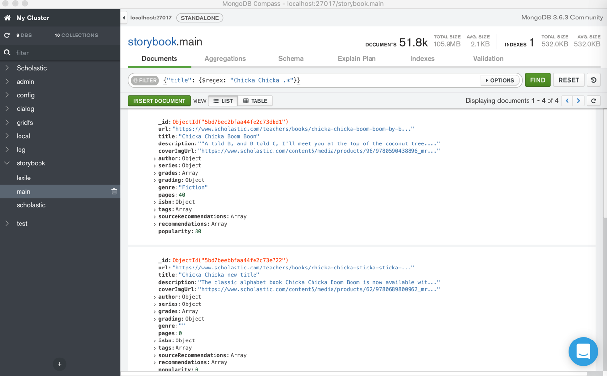

心得和总结
TODO:
- 【已解决】mongo命令行中如何删除文件
- 【已解决】把本地的音频字幕等数据存储到远程服务器的MongoDB数据库中
- 【已解决】mongo中给普通数据库gridfs创建root的角色失败：Error couldn't add user No role named root@gridfs
- 【已解决】本地mongo shell中连接远程加了权限控制的mongoDB
- 【已解决】阿里云ECS服务器中已有的MongoDB的用户名密码和端口
- 【未解决】尝试用Mongo Management Studio去实现导入文件到Mongo的gridfs且带metadata信息
- 【已解决】确认服务器中MongoDB数据库是否有或已开启记录登录的日志
- 【已解决】确认服务器中MongoDB数据库是否有或已开启记录登录的日志
- 【已解决】MongoDB开启访问控制后currentOp出错：not authorized on admin to execute command
- 【已解决】给MongoDB数据库新建用户和权限
- 【已解决】修改MongoDB的默认端口号27017为别的端口
- 【已解决】mongo的shell中find返回多个有限个数的结果
- 【已解决】公司Wi-Fi更换运营商导致IP变化导致远程Mongo连不上
- 【已解决】连接远程mongoDB失败：Failed to connect to after 5000ms milliseconds giving up
- 【已解决】pymongo中用MongoClient去连接远程加了权限控制的mongoDB
- 【已解决】用PyCharm的MongoDB插件连接远程MongoDB数据库
- 【已解决】MongoDB的用户的密码中包含@如何写URI
- 【已解决】给MongoDB限制IP访问
- 【已解决】远程MongoDB新增dialog数据库并新增对应用户和权限
- 【已解决】PyCharm连接远程添加security的authorization的MongoDB出错：com.mongodb.MongoCommandExceptions: Command failed with error 13
- 【已解决】Flask-PyMongo出错：RuntimeError Working outside of application context
- 【已解决】pymongo的count()出错：pymongo.errors.ServerSelectionTimeoutError timed out
- 【记录】通过阿里云ECS服务器安全组限制访问mongo的IP和端口
- 【已解决】用PyCharm写Python的MongoDB代码并调试
- 【已解决】配置mongod以允许内网其他服务器访问mongo服务
- 【已解决】PyCharm中安装MongoDB的插件：mongo4idea
下面总结一些在MongoDB使用期间的心得和注意事项等内容。
先列出一些小的心得
导入数据之前，确保ID不能重复，否则会由于ID重复而无法覆盖
之前某次去恢复数据，故意没有删除本地之前已有（同样但是旧的）数据：

看看导入能否直接覆盖，结果由于ID重复而报错，覆盖失败：
- E11000 duplicate key error collection: storybook.main index: _id_ dup key: { : ObjectId('5bd7be33bfaa44fe2c73bda2') }
^C2018-12-06T11:02:12.531+0800 signal 'interrupt' received; attempting to shut down
2018-12-06T11:02:12.560+0800 error: multiple errors in bulk operation:
- E11000 duplicate key error collection: storybook.scholastic index: _id_ dup key: { : ObjectId('5bc71849bfaa4425b7ea8082') }
- E11000 duplicate key error collection: storybook.scholastic index: _id_ dup key: { : ObjectId('5bc7184dbfaa4425b7ea8083') }
- E11000 duplicate key error collection: storybook.scholastic index: _id_ dup key: { : ObjectId('5bc7184dbfaa4425b7ea8084') }